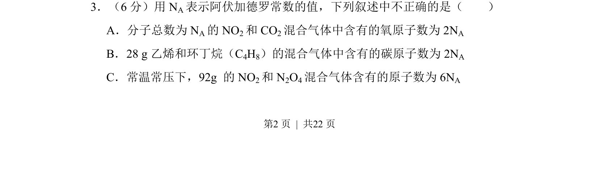
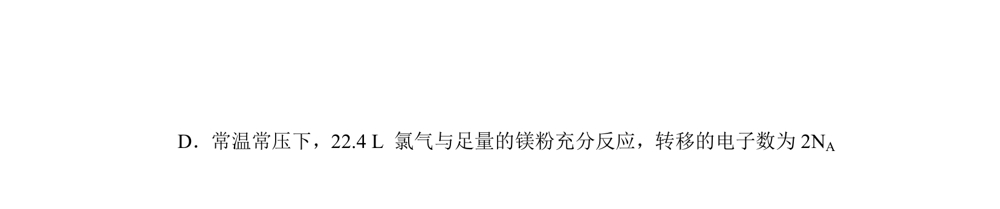
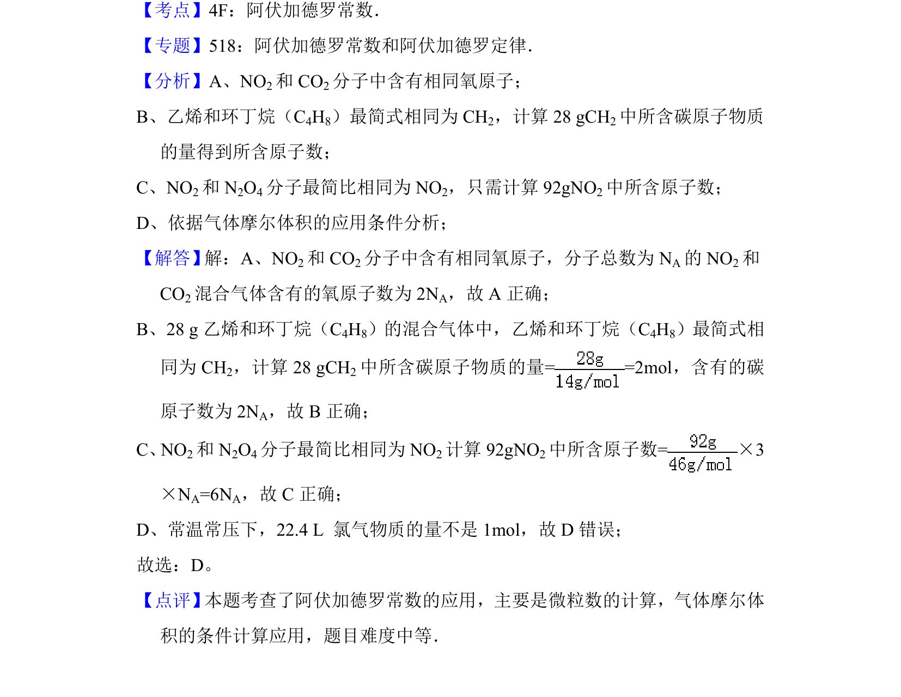

考点：物质的量 阿伏加德罗常数 气体摩尔体积


考查阿伏加德罗常数在混合气体与质量计算中的应用

📄 原 PDF 第 2 页：
素材/真题/吉林/2008-2024·（吉林）化学高考真题/2012年高考化学试卷（新课标）（解析卷）.pdf
3．（6分）用N A表示阿伏加德罗常数的值，下列叙述中不正确的是（ ） A．分子总数为N A的NO 2和CO 2混合气体中含有的氧原子数为2N A B．28 g乙烯和环丁烷（C 4H8）的混合气体中含有的碳原子数为2N A C．常温常压下，92g 的NO 2和N 2O4混合气体含有的原子数为6N A